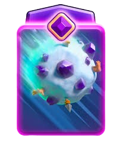
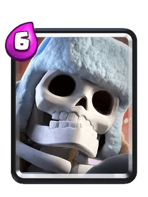
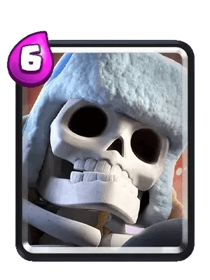

Meu deck favorito tem as seguintes cartas:
 

(Este texto foi feito com ia)
Deck: Pressão Explosiva com Gigante Esqueleto + Clone Mana Média: 3.3 | Estilo de Jogo: Controle / Ataques Surpresa Cartas: Gigante Esqueleto (6 de elixir) – Tanque explosivo e principal win condition. Clone (3 de elixir) – Duplica o Gigante Esqueleto e tropas agressivas. Gangue de Goblins (2 de elixir) – Dano rápido e ótima com Clone. Destruidores de Muro (3 de elixir) – Dano alto contra torres e tanques. Barril de Esqueletos (3 de elixir) – Pressão barata e distração. Cavaleiro (3 de elixir) – Defesa versátil contra tropas terrestres. Arqueiro Mágico (4 de elixir) – Suporte em área e ataque longo alcance. Bola de Neve (2 de elixir) – Controle de multidão e ajuda na defesa. Cálculo do custo: (6 + 3 + 2 + 3 + 3 + 3 + 4 + 2) / 8 = 3,25 (arredondado para 3,3). Como Jogar: 🔥 Ataque Principal: Gigante Esqueleto + Clone: Envie o Gigante Esqueleto e, quando ele estiver perto da torre, use Clone para duplicá-lo. Se ambos explodirem, a torre cai fácil! Gangue de Goblins + Clone: Se o inimigo não tiver feitiços em área, clonar a gangue causa dano massivo. Destruidores de Muro: Apoiam o Gigante Esqueleto ou atacam em contra-ataques. 🛡️ Defesa Sólida: Cavaleiro + Bola de Neve: Para parar tropas médias (como Cavaleiro Valente ou Príncipe). Arqueiro Mágico: Excelente contra hordas (como Esqueletos, Goblins ou Bárbaros). Barril de Esqueletos: Distrai tropas de área (como Bruxa ou Mago de Gelo). ⚠️ Dicas Importantes: Cuidado com feitiços em área (Veneno, Mágico de Gelo, Valquíria). Se o inimigo tem muitos, evite clonar muitas tropas de uma vez. Use Bola de Neve para ajudar o Gigante Esqueleto a chegar na torre. Barril de Esqueletos pode enganar o Log ou Zap do inimigo antes de você mandar a Gangue de Goblins.